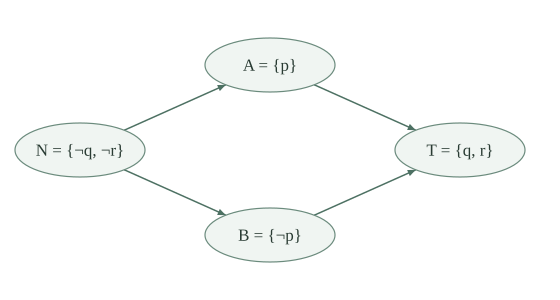

Fix a finite atom set \(P\). Use the literal and CNF conventions: a literal \(\ell=(p,b)\) is true under \(v:P\to\{0,1\}\) when \(v(p)=b\), and its opposite is \(\bar\ell=(p,1-b)\). Thus \(\bar{\bar\ell}=\ell\), and exactly one of \(\ell,\bar\ell\) is true under any valuation.
A 2-CNF is a finite list \(\Gamma\) of clauses, each a list of at most two literals. It is satisfied when every clause has a true literal. Literals and clauses may repeat. A unit clause \([\ell]\) has the same truth condition as \([\ell,\ell]\); the empty clause has no true literal and makes the whole CNF unsatisfiable. The empty CNF is satisfied by every valuation.
A finite CNF mentions only finitely many atoms, so we can take \(P\) to be its occurring atoms, or any larger finite stock. A valuation on that stock can be extended arbitrarily to other atoms. The special restriction here concerns the sizes of the clauses; arbitrary CNFs remain covered by DPLL.
The implication graph of \(\Gamma\) has the \(2|P|\) literals as vertices. Each binary clause \([\ell,m]\) supplies the edges
A unit clause \([\ell]\) supplies the edge \(\bar\ell\longrightarrow\ell\), obtained by duplicating its literal. Empty clauses supply no edges and will be checked separately. No other edges are added. Duplicate edges have no effect on reachability.
The edge \(a\longrightarrow b\) records the constraint that truth of \(a\) requires truth of \(b\). For example, \(\neg p\lor q\) gives \(p\longrightarrow q\) and \(\neg q\longrightarrow\neg p\). Both edges matter: choosing truth values must respect opposite literals as well as the displayed implication.
Write \(a\rightsquigarrow b\) if a finite directed path leads from \(a\) to \(b\), allowing a path of length zero. This is the reflexive transitive closure of the edge relation. It is a preorder: zero-length paths give reflexivity, and concatenation gives transitivity.
If \(v\models\Gamma\), \(a\rightsquigarrow b\), and \(a\) is true under \(v\), then \(b\) is true under \(v\).
For an edge \(\bar\ell\longrightarrow m\) from \([\ell,m]\), truth of \(\bar\ell\) means \(\ell\) is false. Satisfaction of the clause then makes \(m\) true. The other edge is symmetric. For a unit edge \(\bar\ell\longrightarrow\ell\), satisfaction of the unit already makes its target true.
Induct on the number of edges in the path. At length zero the endpoints agree. For a longer path, apply the induction hypothesis up to its last edge, then the edge argument. Thus truth reaches the final vertex.
For all literals \(a,b\),
The two edges from a binary clause are paired by taking opposites and reversing direction. A unit edge \(\bar\ell\longrightarrow\ell\) becomes itself. Apply this operation twice to obtain the edge equivalence.
Given a path from \(a\) to \(b\), replace each vertex by its opposite and traverse the vertices in reverse order. The paired edges form a path from \(\bar b\) to \(\bar a\). A zero-length path remains a zero-length path. Applying this reversal twice proves the path equivalence.
Define \(a\sim b\) when \(a\rightsquigarrow b\) and \(b\rightsquigarrow a\). A strongly connected component is an entire equivalence class for this relation, rather than an arbitrary subset of mutually reachable vertices. The quotient of a preorder gives a finite partially ordered set \(Q\) with
Here \([a]\) is the component containing \(a\). Define \(\overline{[a]}=[\bar a]\). This is independent of the representative: if \(a\sim b\), reversing the two paths gives \(\bar a\sim\bar b\). It is an involution that reverses the quotient order:
The classes include isolated vertices, since each literal reaches itself. Working with whole equivalence classes ensures that distinct classes cannot lie below each other in both directions.
If \(a\sim\bar a\) for some literal \(a\), then \(\Gamma\) is unsatisfiable.
Suppose \(v\models\Gamma\). Exactly one of \(a,\bar a\) is true. If \(a\) is true, the path \(a\rightsquigarrow\bar a\) makes its opposite true too. If \(\bar a\) is true, use the reverse path instead. Either case contradicts the opposite truth values. Hence no model exists.
In the absence of this obstruction, \(C\ne\bar C\) for every component: choosing \(a\in C\), the equation \(C=\bar C\) would put \(a\) and \(\bar a\) in the same component.
There is a listing \(C_0,\ldots,C_{k-1}\) of all components, each appearing once, such that
Write \(r(C_i)=i\). Thus \(r\) is injective and preserves the quotient order. The listing is often called a topological order; only this ordering property is needed.
If the component set is empty, take the empty listing. Otherwise choose a minimal component, put it first, remove it, and repeat on the remaining finite poset. A minimal component exists at every nonempty step by finite extrema. The number of remaining components decreases by one, so the construction stops and lists every component exactly once.
Suppose \(C_i\le C_j\) but \(j<i\). When \(C_j\) was chosen, the distinct component \(C_i\) was still present and lay below it. That contradicts minimality of the chosen component. Hence \(i\le j\), as required. Any choice among minimal components gives a suitable order.
Assume there is no contradictory component and fix an order from . Define the ordered assignment
Otherwise set \(v_r(p)=0\). Equivalently, a literal is intended to be true when its component appears later than its opposite component. This defines a value for every atom, including atoms whose two literals are isolated. Distinct opposite components have distinct ranks, so there is no tie to resolve.
Under the same hypotheses, every literal \(a\) satisfies
Moreover, if \(a\rightsquigarrow b\) and \(a\) is true, then \(b\) is true. In particular, the true components form an upward closed set in the reachability order.
For a positive literal \(p\), the equivalence is the definition of \(v_r\). For \(a=\neg p\), being true means \(v_r(p)=0\), hence that \(r([\neg p])<r([p])\) fails. The ranks are distinct and linearly ordered, so this is equivalent to \(r([p])<r([\neg p])\), the displayed condition for the negative literal. Thus the definition picks exactly one literal from each opposite pair.
Now \(a\rightsquigarrow b\) gives \([a]\le[b]\), while path reversal gives \([\bar b]\le[\bar a]\). Order preservation and truth of \(a\) give the chain
Its endpoints satisfy the truth condition for \(b\). This proves propagation for the constructed assignment, without assuming in advance that it is a model.
Suppose \(\Gamma\) has no empty clause and no component contains opposite literals. Then the specified valuation \(v_r\) satisfies \(\Gamma\).
Consider a clause. If it is binary, say \([\ell,m]\), then either \(\ell\) is true, and the clause is satisfied, or \(\ell\) is false. In the second case \(\bar\ell\) is true, and its edge to \(m\) makes \(m\) true by . Thus the clause is satisfied in either case.
If the clause is a unit \([\ell]\) and \(\ell\) were false, its true opposite would propagate along \(\bar\ell\longrightarrow\ell\), a contradiction. Hence its sole literal is true. Every clause is a unit or binary, because empty clauses are excluded and lengths are at most two. This proves that the whole CNF is satisfied. When there are no clauses, the conclusion holds vacuously.
A finite 2-CNF \(\Gamma\) is satisfiable exactly when it has no empty clause and no strongly connected component contains both a literal and its opposite. Writing \(\operatorname{Sat}(\Gamma)\) for satisfiability, equivalently,
When these conditions hold, ordering the mutual-reachability classes and using \(v_r\) gives an explicit model.
If a directed graph has \(N\) vertices, two vertices are reachable exactly when some path between them uses at most \(N\) vertices and repeats none. Here a zero-length path consists of one vertex; if \(N=0\), there are no endpoints to test.
A path with no repeated vertices has at most \(N\) vertices. Conversely, among paths between two reachable vertices choose one with the least number of edges. If its vertex sequence repeats a vertex, delete the portion between two occurrences, keeping that vertex once. The step after the second occurrence, when present, is still an edge after the first because those vertices are equal. Endpoints are preserved even when the repeated portion reaches the end. This gives a shorter path with the same endpoints, a contradiction. Thus a shortest path has no repetition, and the bound follows.
For a 2-CNF, first test for an empty clause, then inspect the finitely many vertex sequences of length at most \(2|P|\) to decide all reachability questions. Compare each opposite pair using the criterion. On a successful test, group vertices by mutual reachability and successively choose minimal classes to obtain \(v_r\). These are terminating finite searches; no particular component algorithm or running-time bound is asserted.
Take
The components are \(N=\{\neg q,\neg r\}\), \(A=\{p\}\), \(B=\{\neg p\}\), and \(T=\{q,r\}\). The order \(N,A,B,T\) produces the model \((p,q,r)=(0,1,1)\); the order \(N,B,A,T\) produces \((1,1,1)\).
The two implications between \(q,r\), and between their opposites, put each displayed pair in one class. The remaining edges form the diamond below. Since all arrows go from left to right and there are no other edges, these four classes cannot merge.

Choose the order \(N,A,B,T\), with ranks \(0,1,2,3\). Then \([p]\) comes before \([\neg p]\), while \([q]\) and \([r]\) come after their opposites. The constructed valuation is
Each of the four clauses is true under this valuation. Choosing the other permitted middle order \(N,B,A,T\) instead gives \(p=q=r=1\), also a model. Incomparable components allow different choices without threatening the invariant.
Consider the earlier unit-chain formula
The formula is unsatisfiable, and all six literals lie in one strongly connected component.
Its unit and binary edges give the directed cycle
In particular \(p\) and \(\neg p\) reach one another, so the criterion proves unsatisfiability. The edges \(\neg p\longrightarrow p\) and \(r\longrightarrow\neg r\) come from the two units. Retaining only the binary clauses would lose the contradiction. This graph proof collects the same forced consequences that unit propagation discovers successively.
For one atom \(p\), compare the CNFs \([p]\), \([p]\land[\neg p]\), the empty CNF, and a CNF consisting of one empty clause. What does each implication graph say? Could we omit the empty-clause test?
The single unit gives just \(\neg p\longrightarrow p\). The two components are distinct, in that order, and the constructed valuation makes \(p\) true. Adding the opposite unit gives \(p\longrightarrow\neg p\) too, so the literals lie in one contradictory component and the CNF is unsatisfiable.
The empty CNF has no edges. Its opposite literals remain in distinct singleton components, and either truth value is a model. A CNF with one empty clause also has no edges, hence exactly the same reachability graph, but it has no model. Therefore the graph alone cannot detect an empty clause. The separate test is essential; duplicating a unit is valid, whereas duplicating the absence of a literal cannot produce an edge.
Suppose the ordering satisfies \(C\le D\Rightarrow r(C)\le r(D)\). What goes wrong if we make a literal true when its component comes before its opposite? Is one path \(a\rightsquigarrow\bar a\) already an unsatisfiability certificate?
The unit CNF \([p]\) has \([\neg p]<[p]\) in its forced component order. Making the earlier component true would set \(p=0\) and falsify the unit. Truth must move forward along implications, which is exactly what the later-component rule guarantees. One may instead reverse the entire ordering convention and then choose earlier components, but the two directions must be changed together.
A single path is insufficient. Here \(\neg p\rightsquigarrow p\) holds, but \(p\) does not reach \(\neg p\), and \(p=1\) is a model. More generally, a path \(a\rightsquigarrow\bar a\) forces \(a\) to be false in every model. These two paths yield a contradiction when the reverse path also forces its opposite false.